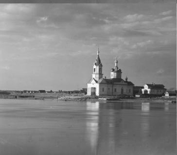

Methods
To evaluate the similarity between channels, I implemented two metrics: The L2 norm (Sum of Squared Differences, SSD) and Normalized Cross-Correlation (NCC).
The SSD calculates the squared difference of pixel intensities between two images I1 and I2 and selects the alignment with the smallest error. This works well when the brightness levels are comparable across channels. In contrast, NCC normalizes the intensity values before comparison (L2 norm in the denominator) and computes their dot product, making it more robust to differences in exposure or contrast between the red, green, and blue images.
Based on these metrics, I first used an exhaustive search approach for alignment. Within a fixed displacement window, each possible shift of the target channel relative to the reference channel was evaluated. The displacement that minimized the L2 error or maximized the NCC score was chosen as the best alignment. Although straightforward and reliable for small images, this method becomes prohibitively slow when applied to high-resolution scans due to the large number of possible shifts.
To handle larger images efficiently, an image pyramid method was implemented. The basic idea is to create progressively downsampled versions of the input images and begin the alignment process at the coarsest level. At this scale, large displacements in the original images correspond to only small shifts, which makes it possible to search over a reduced displacement range. Once an approximate alignment is found at this coarse resolution, the estimated displacement is scaled up to the next finer level and used as an initial guess. At this level, the algorithm no longer needs to search over the full displacement window; instead, it only refines the estimate within a small neighborhood around the upscaled shift. This process is repeated level by level until the original full resolution is reached.
In my implementation, the recursion stops once the image size falls below a minimum threshold, at which point a standard single-scale exhaustive search is applied. Otherwise, the images are downsampled by a scale factor (0.5) to form the next pyramid level, and alignment is computed recursively on these smaller images. The estimated displacement at the coarse scale is then rescaled to the current level and refined by searching in a small window around this prediction. Depending on the chosen metric, either the Sum of Squared Differences (L2) is minimized or the Normalized Cross-Correlation (NCC) is maximized to determine the best alignment. This divide and conquer approach reduces computation time while still producing accurate results, since the coarse levels capture large global shifts and the finer levels correct small local misalignments.
The procedure is shown below:
Step 1: Scale=1/16, shape=(160, 182), max_disp=7
Step 2: Scale=1/8, shape=(320, 364), max_disp=15

Step 3: Scale=1/4, shape=(640, 727), max_disp=30
Step 3: Scale=1/2, shape=(1280, 1454), max_disp=60

Step 4: Scale=1/1, shape=(2561, 2907), max_disp=120
On the original sized image